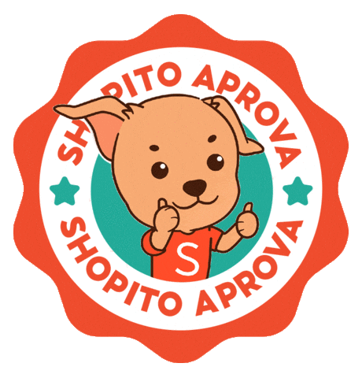

Problem Solver Bot
O Problem Solver Bot é uma ferramenta criada para ajudar os PS no dia a dia. Ele deixa algumas tarefas do WMS mais rápidas, reduz etapas repetitivas e facilita consultas que normalmente tomariam mais tempo.

Como funciona a instalação?
A instalação é feita em três passos simples. Primeiro instalamos uma extensão no navegador, depois instalamos o Problem Solver Bot, e por último abrimos o WMS normalmente. Depois de instalado uma vez, não precisa repetir o processo todos os dias.
Vídeo com o passo a passo
Assista ao vídeo abaixo para acompanhar a instalação. Depois, é só seguir os botões na mesma ordem.
Instalar a extensão necessária
Clique no botão ao lado e instale o Tampermonkey no navegador. Ele é necessário para permitir que o Problem Solver Bot funcione dentro do WMS. Se essa extensão já estiver instalada, pode ir direto para o passo 2.
Instalar o Problem Solver Bot
Depois que a extensão estiver instalada, clique neste botão. Vai abrir uma tela de confirmação. Nessa tela, clique em instalar.
Abrir o WMS
Após instalar, abra o WMS normalmente. O Problem Solver Bot será carregado sozinho quando a página terminar de abrir.
Se algo não funcionar
- Confirme se o Tampermonkey foi instalado no navegador.
- Abra as extensões do Chrome e confirme se a permissão “Permitir scripts de usuário” está ativada no Tampermonkey.
- Se essa opção não aparecer, ative o “Modo do desenvolvedor” na tela de extensões.
- Depois de instalar ou liberar a permissão, feche e abra o navegador novamente.
- Volte nesta página e tente clicar em “Instalar bot” outra vez.
- Se já instalou o bot, abra o WMS e aguarde a página carregar completamente.